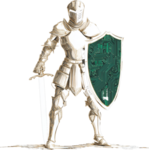
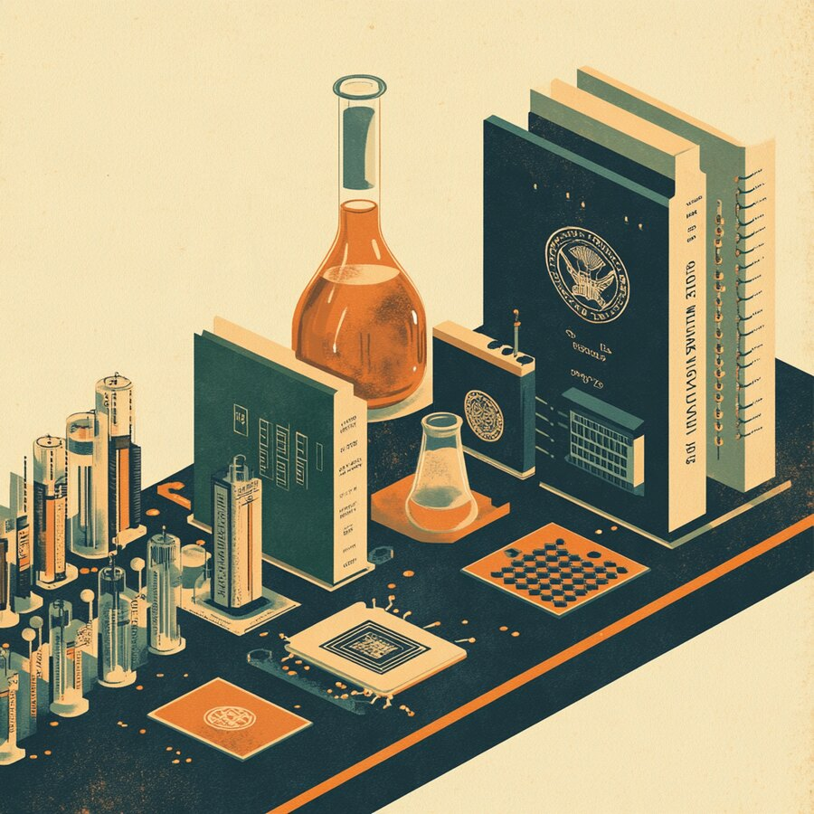

| IN THIS ISSUE |
SILICON & CLOUD Google’s TPUs split into a product line | SEMICONDUCTORS A $720M bet on a chip that isn’t a GPU | EMERGING TECH IBM’s quantum roadmap crosses 1,000 qubits | ENTERPRISE SOFTWARE AI moves from pilot to the payroll |
CS
Get it in your inbox
Subscribe free — a new edition weekly |
NETWORK The outage put resilience back on the agenda | IDENTITY & ACCESS Securing the agents that carry your keys | CYBERSECURITY Patch-tonight: an Outlook zero-day steals your logins | MARKETS Nvidia’s number the whole market is waiting on |
For about a day, the back office of the world simply stopped. Beginning midday on November 12, a global Microsoft 365 outage knocked out Outlook, Teams, Copilot and Exchange Online across 74 countries for roughly 24 hours — Outlook problem reports on Downdetector peaked near 130,000. The cause was not a hack. Microsoft’s preliminary post-incident report blamed a months-old Windows server defect that, under heavy traffic and reduced capacity, left more than 80% of affected servers unresponsive — and servers that recovered fell over again the moment real traffic returned. The fallout was physical: a Dublin hospital asked patients to phone instead of email, Australia’s domestic-intelligence agency and police were hit, Japan’s government IT was disrupted, and New Zealand paused visa processing.
The uncomfortable lesson isn’t about one vendor’s bug. It’s that the consolidation that makes your stack efficient also makes it fragile. The same single-provider integration that gives you tidy billing, one identity system and one admin console means that when that provider has a bad day, your email, your meetings, your security tooling and your AI assistant all go dark together — and no amount of your own redundancy helps, because the dependency is outside your walls.
Our read. Resilience is now a board-level question, not an IT footnote. Three moves. Map your single points of failure — honestly: if one cloud suite is email and identity and collaboration and security, that is one failure domain wearing four hats. Build the analog fallback: an out-of-band way to reach staff, customers and responders when the primary suite is down (the hospitals that switched to phones had a plan; many didn’t). And price resilience into the architecture — a second channel for the few truly critical workflows, tested, not assumed. Efficiency through consolidation and resilience through diversification pull in opposite directions; the outage just made the trade-off everyone’s problem.
| 1 SILICON & CLOUD | CUSTOM CHIPS · COMPETITION |
Google’s Tensor Processing Unit line matured on two fronts this week. The seventh-generation Ironwood (TPU v7) is moving toward broad availability — Google claims more than 4× the performance of the prior generation and the ability to lash up to 9,216 TPUs into a single pod — and the company introduced two specialized variants: a TPU 8tX for government and regulated industries and a TPU 8i Max for compute-heavy work like coding assistants and drug discovery. Anthropic alone plans to use as many as one million Ironwood chips. When a chip becomes a segmented product line, the vendor is signaling demand deep enough to specialize — and building a credible alternative to the GPU as the default.
Our read. For most enterprises this isn’t a buy decision yet, but it changes the strategic picture in two ways worth tracking. First, leverage: for the first time, the largest cloud providers (Google’s TPUs, Amazon’s Trainium/Inferentia) have silicon that can genuinely compete with Nvidia on cost and integration for some workloads — which means pricing power, and your negotiating position, may finally start to shift. Second, lock-in: custom silicon is tied to a specific cloud, so the cheapest performance-per-dollar can quietly become the hardest to leave. The move is to keep your models and workloads portable — trained and served through abstractions you can repoint — so you can chase the better economics these chips create without marrying the cloud that made them. Watch whose silicon your AI vendors actually run on; it increasingly decides their costs, and yours.

| 2 SEMICONDUCTORS | FUNDING · ARCHITECTURE |
UK-based Fractile secured a $720 million Series C at a $7 billion post-money valuation, backed by Thrive Capital, Founders Fund, Lightspeed, Redpoint and the UK government’s Sovereign AI Venture Fund. Its design stacks DRAM directly on top of logic to clear more memory bandwidth than conventional HBM-based parts — targeting one of the most stubborn limits in AI inference, where feeding data to the chip, not raw math, is often what caps throughput. The caveat is large: Fractile has not shipped a production chip (commercial silicon is targeted for 2027), making it the best-funded challenger with the least silicon in the field. Investors are betting that an architectural idea — not just a faster GPU — can crack the economics of serving AI at scale.
Our read. This is a “watch the direction” item, and the direction matters more than the company. The first phase of the AI build-out was about compute; the frontier is shifting to memory and energy efficiency, because the cost of serving models (inference) — not training them — is what dominates once something is in production, and memory bandwidth is the quiet governor on that cost. For buyers, two takeaways. The field of credible non-Nvidia options is widening, which over time means more choice and more pricing pressure on inference — good for anyone running AI at scale. But “funded” is not “shipping”: treat 2027-and-beyond silicon as a roadmap signal, not a procurement plan, and judge these challengers on delivered performance-per-watt when the parts actually arrive. The useful habit now is to start asking your inference vendors about memory bandwidth and efficiency, not just peak FLOPS.
| 3 EMERGING TECH | QUANTUM · ROADMAP |
IBM unveiled the Nighthawk r3 quantum processor — designed to run 10,000 quantum operations across 520 programmable qubits (2,034 physical qubits) — and said it plans to connect two r3 processors into a single 1,040-qubit system in 2027 using chip-to-chip couplers. The strategy is modular: scale by linking processors rather than building ever-larger monolithic chips. IBM also reported that customers including E.ON and Algorithmiq have run 34 billion circuits on the current-generation hardware, with performance gains up to 19× on certain workloads. Important caveat: these are physical qubits, not error-corrected logical ones, so practical, fault-tolerant quantum computing remains years out.
Our read. For nearly every enterprise, quantum is still a watch-and-learn item, not a line in next year’s budget — and anyone selling you “quantum-ready” products today is mostly selling you a story. But the trajectory is worth tracking for two concrete reasons. First, the engineering is advancing on a credible roadmap (more qubits, faster operations, modular scaling), which is the signal that matters more than any single lab milestone. Second, and more practically, the same progress is what makes “harvest now, decrypt later” a real planning concern: adversaries can capture encrypted data today and decrypt it once quantum machines mature, so anything you need secret for ten-plus years argues for beginning the migration to post-quantum cryptography (the NIST-standardized algorithms) on long-lived secrets now. You don’t need a quantum computer to act; you need to know which of your data has a long enough shelf life to care.
| 4 ENTERPRISE SOFTWARE | SERVICES · AGENTS |
Two developments this week captured enterprise AI’s move from experiment to operations. Cognizant stood up a Claude Frontier Capability Group — more than 25,000 professionals dedicated to delivering and operating Anthropic’s Claude for clients, with over 44,000 associates trained or certified — and cited outcomes like a 35% cut in shop-floor downtime at a pharmaceutical manufacturer. Separately, LangChain raised $300 million at a $3 billion valuation (led by CapitalG), building the open-source orchestration layer enterprises use to wire agents into real workflows. The common thread: the money and the headcount are flowing to the unglamorous middle — integration, operation, orchestration — not the models themselves.
Our read. The telling signal is that it takes 25,000 people to deliver one model well. Read that two ways, both true: the technology is genuinely useful enough to justify that investment, and it is hard enough to run in production that a services army exists to do it. For leaders, the practical implications are concrete. First, the bottleneck has moved from model capability to integration and operations — your AI results will depend less on which model you pick and more on how well it’s wired into your data and workflows, and who keeps it running. Second, decide build-vs-buy deliberately: orchestration layers like LangChain let you own and customize the connective tissue (and avoid single-vendor lock-in), while services firms let you rent expertise you don’t have — both are reasonable, but drifting into either by accident is not. The era of the flashy pilot is ending; the era of operating AI, with all its unglamorous plumbing and governance, has begun. Budget for the running costs, not just the demo.
| 5 NETWORK & RESILIENCE | OBSERVABILITY · CONTINUITY |
This week’s Microsoft 365 outage (front page) did more than break email — it put network and operational resilience back on the executive agenda, and vendors moved to meet the moment. Cisco bundled its ThousandEyes internet- and cloud-visibility testing into access-point licenses at no extra cost and shipped management hooks for its networking platforms, pushing the idea that you should be able to see a degradation in a provider you don’t control before your users do. Spectrum Business launched a managed service that blends fiber, broadband, 5G and satellite under a single uptime SLA, and Cornelis Networks announced a UALink-based scale-up fabric — all variations on one theme: when the failure is upstream, your leverage is visibility and alternate paths, not more of the same pipe.
Our read. The outage exposed an uncomfortable truth: much of what breaks your business now lives outside your perimeter — a cloud suite, a transit provider, a SaaS dependency — where your own redundancy buys you nothing. Two practical moves. First, buy visibility before you need it: independent monitoring of the providers and paths you depend on (the kind ThousandEyes and its rivals sell) turns “is it us or them?” from an hour of guessing into a dashboard, which is the difference between a measured response and a panicked one. Second, design alternate paths for the few things that cannot go dark — a second internet transit, an out-of-band comms channel, a fallback for payments or safety-critical systems — and test them, because an untested failover is just a hopeful diagram. Resilience isn’t a product you buy once; it’s a property of how you’re built, and this week it stopped being optional.
| 6 IDENTITY & ACCESS | AGENT IDENTITY · GOVERNANCE |
IBM acquired identity-security company AuthMind and integrated it into HashiCorp Vault to tackle a fast-growing problem: securing AI agents that act autonomously with access to sensitive systems. AuthMind’s identity activity graph maps the relationships and access paths between identities and resources, surfacing shadow agents and flagging anomalous behavior after credentials leave the vault — the blind spot traditional identity tools miss. IBM frames it as “agent runtime security” across five jobs: register, delegate, authorize, audit and revoke. The timing is the point: as enterprises deploy agents that act on behalf of users and other agents, authenticating humans at the door is no longer the whole job.
Our read. A decade of identity investment taught organizations to secure human logins — passwords, MFA, single sign-on. Autonomous agents break that model in a specific, dangerous way: they hold credentials, make their own decisions, call other systems and other agents, and keep acting long after the initial login — so the risk isn’t just getting in, it’s what a legitimate-but-misbehaving (or hijacked) agent does once inside. Three moves to get ahead of it. Inventory your non-human identities — service accounts, API keys and now agents almost always outnumber your employees, and most organizations can’t list them. Give agents short-lived, narrowly-scoped, revocable credentials, not standing keys, so a compromised agent has a small blast radius and an off switch. And log and monitor what agents do after authentication, not just whether they authenticated — because with agents, the second factor you really need is behavioral. The identity perimeter just grew a population you didn’t hire; govern it like one.
| 7 CYBERSECURITY | ZERO-DAY · PATCH NOW |
Microsoft confirmed attackers are exploiting an Outlook zero-day — CVE-2026-124194, patched November 10 — that can expose Windows authentication hashes when a user merely opens a malicious file, handing attackers credentials they can relay or crack without the victim typing a password. It didn’t arrive alone. Google patched CVE-2026-125350, a use-after-free in Chrome — reportedly the eighth actively-exploited Chrome zero-day of 2026 — and researchers disclosed NoisyTCP (CVE-2026-99288), a Linux-kernel race condition that lets a remote, unauthenticated attacker crash default-configured servers. Three different stacks — email client, browser, server OS — all with exploitation in the wild in a single week.
Our read. The through-line is that the most mundane software is the perimeter: the inbox, the browser, the kernel every server runs. An Outlook flaw that steals your login just by rendering a file collapses the comforting idea that users have to “fall for” something — sometimes opening the message is enough. Three actions, in order. Patch the Outlook and Chrome zero-days now, not on the next maintenance window — “actively exploited” plus “on CISA’s KEV list” is the definition of a short clock. Block outbound NTLM / SMB to the internet so a stolen hash can’t phone home, the standard mitigation for this class of credential-theft bug. And schedule the Linux kernel update for NoisyTCP on internet-facing servers, since a remote crash is a denial-of-service anyone can trigger. None of this is exotic — it’s patch hygiene on the three pieces of software everyone uses and nobody thinks about, which is exactly why attackers keep going there.
| 8 MARKETS | EARNINGS · CONCENTRATION |
After the US close on November 17, Nvidia reports fiscal-Q3 results, with consensus near $109 billion in quarterly revenue and all eyes on the data-center line (last quarter: $89 billion, up 117% year-over-year). The report lands straight into this month’s anxieties — AI-valuation worries, data-center debt, and the custom-silicon pressure from Google’s TPUs and Amazon’s chips (see Silicon). The striking part isn’t the number itself; it’s that a single company’s earnings have become the market’s proxy for whether the entire AI build-out is real. When one data point carries that much weight, the weight itself is the signal.
Our read. Most leaders don’t trade Nvidia stock, so the earnings line matters less than what the reaction teaches about risk. The lesson is concentration: an enormous amount of the market’s confidence — and a lot of your vendors’ roadmaps and pricing — now rests on one supplier’s results and one category’s spending continuing. That is exactly the kind of single-point dependency this issue keeps circling, from the cloud outage that took down four services at once to the AI capacity you rent from a handful of providers. You can’t diversify Nvidia, but you can refuse to inherit its leverage: keep your AI commitments staged against milestones rather than signed as long lock-ins at today’s prices; keep models and workloads portable so a repricing or a supply wobble in any one vendor is an inconvenience, not an outage; and judge your own AI spend on a measurable return, not on the assumption that because everyone is spending, the spending must be safe. Watch the number tonight — but manage the concentration it represents every week.
| THE THROUGH-LINE | ACROSS ALL EIGHT LAYERS |
| IN MARKET | NEW PRODUCTS THIS WEEK |
| ON THE RADAR | EVENTS & CONFERENCES |
| PARTNER DESK | PARTNER SPOTLIGHT · ROTATES EACH ISSUE |
| ABOUT CYBERSAINYA | DIGITAL TRANSFORMATION PARTNER |
CyberSainya is a digital transformation partner. We help organizations turn IT, security, and AI from sources of risk into engines of growth — complexity made simple. That means clear strategy, the right technology, and a partner who stays in the room long after the decision is made: advisory and consulting, security and IT assessments, executive workshops, and hands-on execution. Through our AI products division, CernoGlobus, we build practical, security-by-design AI that puts enterprise-grade protection behind everyday automation.